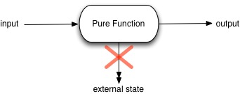

Pure Function¶
函数的三大作用¶
- mapping: 映射，从输入计算得到输出的函数。
- procedure: 处理过程，一系列的处理过程组织成一个函数。这样的编程方式经常被称为面向过程编程。
- IO: 用户输入输出，系统间交互，磁盘读写，网络请求等

Mapping¶
对于pure function，最主要讲的是mapping。含义是，对于pure function，所有的输入都分别对应一个输出，函数会处理输入，返回一个对应的赎回粗。
在代数中，mapping指的就是将集合A映射到集合B。最典型的mapping就是代数中的函数，如
f(x, y) = x + y
在JavaScript中，相似的：
const add = (x, y) => x + y
pure function¶
purefunction 的定义是，满足以下条件的函数：
- 无论执行多少次，相同的输入都会产生相同的输出
- 不产生副作用(side effect)
反向：如果使用一个函数时候，不使用他的返回值，但是确有某些意义的话，说明这个函数是非纯函数。

建议在任何可以使用pure function的地方使用它。因为他是简单的、最容易复用的代码块。在CS中，最符合KISS的原则（Keep It Simple, Stupid）。pure function有很多有利的性质，且构造了 函数式编程(functional programming) 的基础。pure function是和外界的状态完全隔离的，这避免很多由于依赖外部状态导致的bug。这样的特性，同时成就了他们能够很好地胜任并行计算，无论是GPU并行计算、还是说在整个分布式系统中。
同时pure function很容易维护、重构、组织代码，让程序变得更加灵活、对变化的适应性更强
关键点：
- avoid shared state (避免共享状态，共享状态的函数非纯)
- random numbers generate (随机数生成，导致函数非纯)
- IO函数 本文不讨论
- no side effect or mutation 无副作用和修改 pure function中，相同的输入永远会得到相同的输出。
Math.random() // not pure const time = () => return new Date() // not pure const compare = (x, y) => return x < y // pure

共享状态的问题¶
在JavaScript中，假设函数
var state = 1 function f () { state = state * 2 return state } function pure (state) { return state * 2 } // use f() state = pure(state)
以上的f函数就是，即使不使用f的返回值，f的运行也是有意义的。但是pure则不同，不使用pure的返回值，则pure执行是无意义的。问题在于f和外部存在“共享状态”，当外部作用域的变量被多个使用的时候，共享就会存在很大的问题。
假设我们的函数存在异步操作，那么就会存在另外一个问题，竞争条件。
竞争条件
竞争条件的含义，程序执行的结果取决于调度的顺序，这种现象称之为竞争条件
考虑以下JavaScript代码
var state = 1; function f1 () { return new Promise((resolve, reject) => { state = state * 2 timeout(() => { reslove(state) }, 1001) }) } function f2 () { return new Promise((resolve, reject) => { state = state * 2 timeout(() => { reslove(state) }, 1000) }) } f1() f2()
在这里你会发现，管理state这个变量的状态，会变得非常复杂。有同学说理解了JavaScript的异步队列，timeout也能知道先后执行顺序。但是这样的了解并不应该用在工程化实现上来，无疑这两处产生的竞争条件会大大影响代码的可维护性。这意味着，程序的不确定性，输出的结果是不可预计或者是难以预计的，这导致难以测和难以被理解。
不可对参数进行修改¶
我们知道，在JavaScript中，传入函数的参数都是传递引用的。这意味着，我们可以在函数中对参数的值进行修改，从而修改调用时候传入的值。
// not pure const push = (arr, x) => { arr.push(x) }
在上述例子中，push函数调用时候，修改了arr的值，使得整个函数不是pure的。
此处的问题在于，整个函数对arr进行了修改，实质上arr可能还会用于其他的函数之中。这里就存在了隐式的状态变化，维护这份代码的时候必须心里非常清楚整个函数做了这样的操作，在改变涉及arr参数的函数的调用顺序时候，也要考虑这个问题。对于代码重构来说，可能会导致出现很多意想不到的bug。
换一种方式
// pure const push = (arr, x) => { let newArr = lodash.cloneDeep(arr) newArr.push(x) return newArr }
在这个例子里面，我们调用lodash的cloneDeep方法对数组进行深复制，然后再进行push操作，最后返回新的数组。使得这个函数的运行和app整体的state是无关的、独立的。
有同学会问，深复制会导致性能的消耗。这个是肯定会的，但是此处我们讨论的层次是系统状态的关联，不是性能层面的。
值得注意的是，我们经常使用的lodash中，有的函数是不带副作用的，但是有些函数确实带副作用的，需要认真阅读文档。在使用在这样是存在差异的。
pure function 应用¶
不是所有的函数需要时pure，有的函数也不应该成为纯函数。纯函数和非纯函数可以和谐的共处
- react rudux 状态管理：相同序列操作传入reducer中，永远产生相同效果，这取决于pure function。如果reducer中不使用pure function，就会产生不可控制的状态，在无形中增加了很大的维护成本，导致业务难以维护，当业务越来越庞大时候，最终走向重构。
- 可测试性和可维护性。因为相同的输入永远会产生相同的输出，对测试来说是很非常好的。如果在正确的地方使用pure function，可以有效的增加代码的质量。